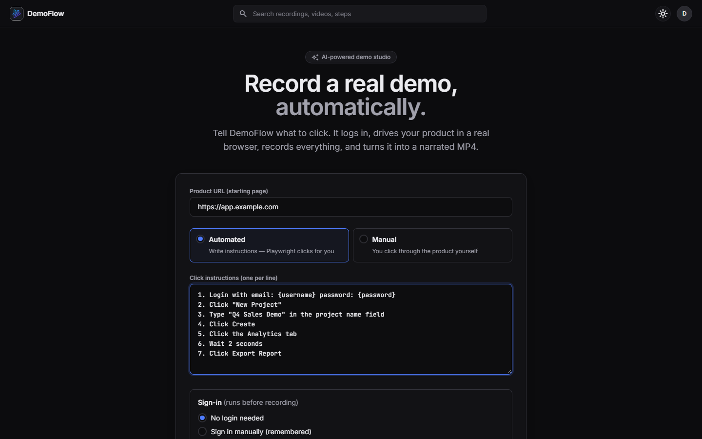
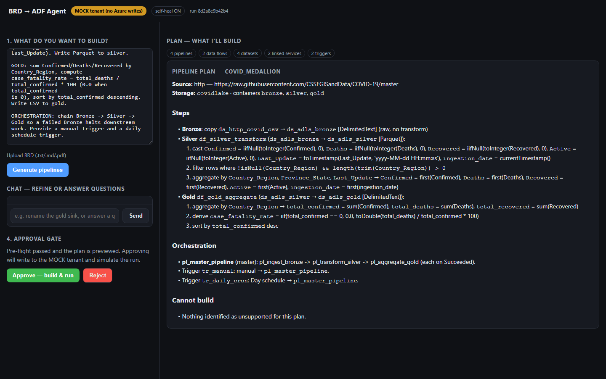
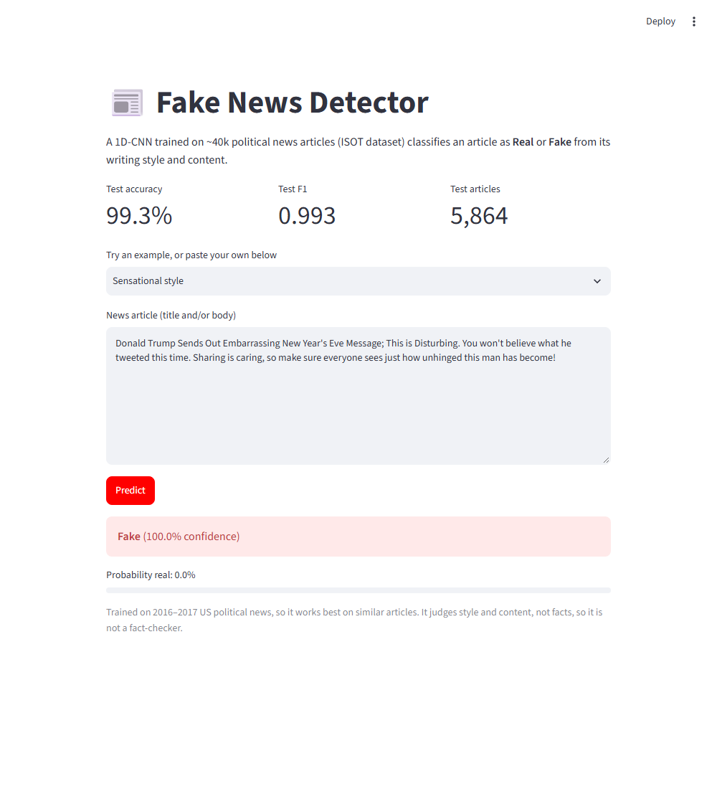
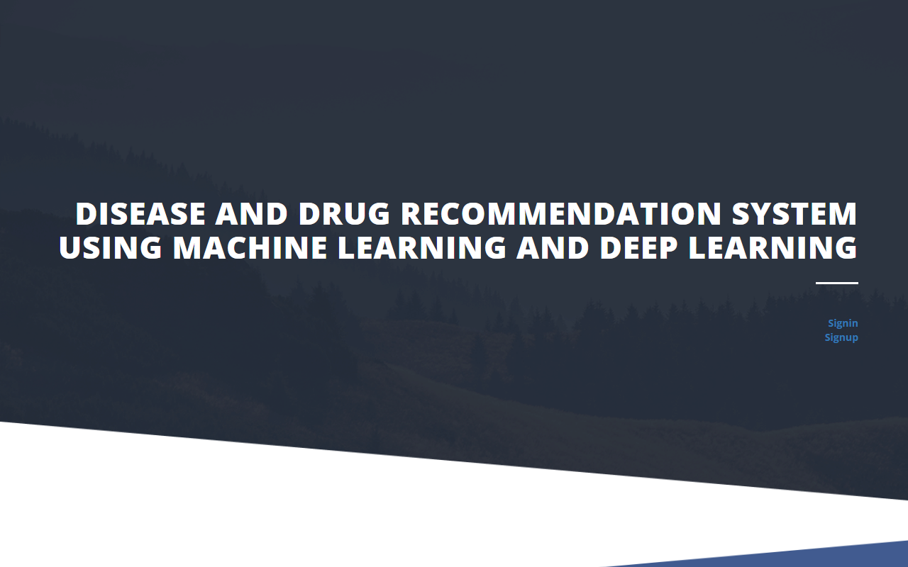

About
I'm an MS Computer Science student at Texas Tech University and a graduate assistant building RAG pipelines and the evaluation framework that checks them for groundedness and hallucinations.
This summer, as an AI Engineer Intern at Zion Cloud Solutions, I shipped 7 AI applications in 14 weeks, including an agent that turns requirement documents into deployed Azure Data Factory pipelines and an MCP server exposing 91 Azure DevOps tools to Gemini Enterprise.
What I care about: LLM systems where the model fills a typed plan and deterministic code does the risky part, and evaluation that survives scrutiny. I've caught test-set model selection in a NeurIPS paper's code and a 99% that turned out to depend on the word "Reuters".
Experience
-
Aug 2025 — Present
Graduate Assistant, Full-Stack & AI Developer · Texas Tech University
Built a RAG evaluation framework that automatically tests a RAG agent, cross-checking its answers against the knowledge base for retrieval relevance, groundedness and hallucinations, and generating analysis reports. Build full-stack apps and RAG pipelines from front end and FastAPI services to retrieval and LLM generation.
-
May — Aug 2026
AI Engineer Intern · Zion Cloud Solutions
Delivered 7 AI applications in 14 weeks across Google Cloud and Azure. Built an agent that turns business requirement documents into deployed Azure Data Factory medallion pipelines, using a deterministic engine and a self-healing loop. Deployed a containerised MCP server exposing 91 Azure DevOps tools to Gemini Enterprise via a Google ADK agent, with per-user OAuth. Built "talk to your data" agents over 6 sources, and benchmarked 3 LLM families on error rates.
-
Oct — Nov 2024
Deep Learning Intern · Infosys Springboard
Built a deep learning pipeline that classifies news articles as real or fake, from text preprocessing through training and evaluation.
-
Apr — Jul 2024
Data Engineering Intern · Artha Solutions
Built ETL pipelines with validation and data quality checks, and parallelised validation with Ray. Wrote advanced SQL, applied fact/dimension data modelling, and built Tableau KPI dashboards.
2025 — 2027
MS, Computer Science
Texas Tech University
2021 — 2025
BE, Computer Science
Osmania University · CGPA 8.03
Awards
1st Place, SEEKH Tech Fest
2 Google Gemini Enterprise certifications
Projects
-

DemoFlow ↗
AI agent that drives a real browser from plain-English steps, records it, and has Gemini Vision split it into steps and write narration. FFmpeg then adds highlights, zooms and a voiceover. URL in, narrated MP4 out.
Selector → vision-click fallback ladder · every AI step has a fallback
-

BRD → ADF Agent ↗
Turns a requirements document into a deployed Bronze → Silver → Gold Azure Data Factory pipeline. The LLM only fills a typed plan; a deterministic compiler emits the Azure JSON, so output is valid by construction. Pre-flight checks and a human approval gate come before any deploy.
180 tests · runs fully offline in mock mode
-
out-of-domain acc. · 10 X-ray sets
KnoBo reproduction (NeurIPS 2024) ↗
Reproduced a knowledge-grounded concept-bottleneck method for medical imaging. Fixed a bug that could silently corrupt ablations, made training ~6× faster, and replaced test-set model selection with a held-out split.
+8.8 pts out-of-domain · domain gap 27.4 → 14.2 · accuracy was overstated by 1.8 pts
-
Network Security AI Tutor ↗
Team project: a private tutor that answers only from course material, with citations, fully offline. I built the RAG core: ingestion, retrieval with a relevance gate, prompt-injection defences and local-only security checks.
Team of 7 · my part: the RAG core
-

Fake News Detector ↗
1D-CNN news classifier. 99.8% of real articles mentioned "Reuters", so I removed every source giveaway and checked the score still held against TF-IDF baselines. Served with Streamlit.
99.3% accuracy · F1 0.993 · 5,864 held-out articles
-

Disease & Drug Recommendation ↗
BE final-year project: a symptom chatbot (typed or spoken) with a TF-IDF + CNN model, diet and medication suggestions. Deduplicated 4,920 rows down to 304 unique cases before splitting, which turned a fake 100% into an honest number.
98.4% held-out accuracy · 41 diseases
More builds
Skills
- AI / ML
- LLM agents · tool calling · MCP · Google ADK · RAG & RAG evaluation · PyTorch · TensorFlow · scikit-learn · CNNs · CLIP · YOLO · OpenCV
- Data
- Azure Data Factory · medallion architecture · ETL · SQL · Ray · BigQuery · Snowflake · PostgreSQL · pandas · Tableau
- Software
- Python · FastAPI · Flask · REST · Docker · Azure · GCP · Playwright · FFmpeg · pytest · Git · JavaScript